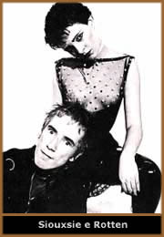
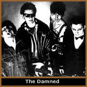
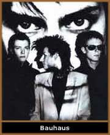
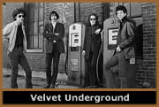
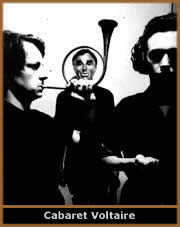

Existem duas datas mágicas
para o que será relatado a seguir: 1977 e 1982. Estes dois
anos marcam duas fases do punk, primordiais para o entendimento
da música das décadas posteriores. O ano de 1977
marca o surgimento, para o mundo, do punk rock, independente de
ele já estar sendo praticado de forma mais branda nos EUA,
antes disso. Já 1982 marca seu "multifacetamento":
new wave, no wave, darkwave, góticos, hardcore, skins,
ska, two-tones, world music etc. Nesse meio tempo é que
o pós-punk existiu de forma mais intensa. Isso porque as
delimitações não estavam definidas, tudo
fazia parte de um único estilo, como se fosse o efervescente
centro de um vulcão, prestes a expelir sua lava, lançada
ao mundo nos anos seguintes em vários segmentos a escorrer
pela montanha.
Nesse caldeirão, chamado
pós-punk, cabia o experimento do Gang of Four, com suas
batidas afro-punk-funks, lançando o fundamental Entertainment!
em 1979; mas a banda somente ganharia as paradas do mundo em 1982,
com o single I Love a Man In a Uniform, já totalmente
pop. Cabia também os experimentos similares do Talking
Heads, banda pertencente à cena proto-punk de Nova
Iorque, mas que deu as bases da world music ao mundo, com seu
My Life In The Bush of Ghosts, de 1982. Ou ainda a opção
pelo eletrônico, em bandas como Ultravox, que começou
punk com Ultravox! e terminou new romantic nos anos 80.
Ou os caminhos tenebrosos (no bom sentido) pelos quais trilharam
Damned e Siouxsie & The Banshees, por exemplo,
que acabaram no gótico oitentista. Ou até mesmo
aqueles que nunca abandonaram o pós-punk, apenas transmutando-o
de acordo com os anos, como The Fall ou Nick Cave
(seja no Boys Next Door, no Birthday Party ou
com os Bad Seeds). Sem contar aqueles que ainda não
sabiam que caminhos trilhar, mas sabiam que algo tinha de ser
feito, como Mick Hucknall (Simply Red) e Roland
Gift (Fine Young Cannibals), que foram vocalistas
de (inexpressivas) bandas punks. O U2 era punk. Tudo
era punk, senão por ideal, por moda mesmo.
Ainda que dando essa impressão, o punk rock
não veio acabar com nada: veio apenas acertar a rota da
música jovem ocidental. Por trás daquela algazarra
sonora, havia todo um "modus operandi" que norteou a
produção cultural posterior, indo desde a democratização
da música até a literatura (vide o impulso dado
aos fanzines). Com isso, não há dúvida alguma,
resgatou a fórmula da música pop (quase perdida
em meios às plumas, paetês, espetáculos e
exageros dos anos 70): mensagem direta e imediata, em democráticos
três ou quatro minutos, tempo esse suficiente para que todos
pudessem dar seu recado.
Esse punk da primeira hora era feito por moleques
que mal sabiam tocar seus instrumentos, ou desconheciam seus limites
(tanto os deles próprios quanto os dos ditos instrumentos).
Então, para que chamassem a atenção e fossem
ouvidos, vindos dos subúrbios e sem voz na mídia,
levaram a extremos aquela fórmula pop: as músicas,
barulhentas, mal passavam dos dois minutos; os vocais eram vociferados,
gritados mesmo; o baixo estalado; a bateria veloz e furiosa; a
guitarra distorcida; e assim por diante. Teclado, num primeiro
momento, nem pensar, pois era o símbolo máximo dos
representantes do mainstream da época, ou seja,
do rock progressivo - que, contraditoriamente, não deixava
de ser popular, pois era moda. Essa visão distorcida desse
potencial "inimigo" (o teclado) só foi revista
com a evolução do punk para o pós-punk.
Costuma-se dar o nome de pós-punk àquela
estética sonora surgida imediatamente após o punk.
É como se fosse um primeiro estágio de evolução
da crueza punk. E dessa evolução continuada surgem
praticamente todos os estilos e diretrizes do universo musical
dos anos 80, indo desde os estilosos góticos até
as dançantes raves e seus ritmos eletrônicos. Sem
contar que estilos já existentes e consagrados, como o
ska, o reggae e até o heavy metal, tiveram de refazer seu
caminho. O próprio heavy metal só ganhou a cara
que conhecemos hoje quando assimilou a fúria punk (via
thrash, black e outros estilos mais radicais).
Dessa forma, vamos encontrar bandas como o The
Police ou o The Jam, entre outros, que eram formadas
por músicos bastante técnicos. O primeiro do Police
(Outland's D'Amour), lançado em 1977, tinha o
frescor punk, mas o segundo, do ano seguinte, já trazia
música dançante e elaborada, a partir do título
do álbum - Regatta de Blanc, ou seja, "Reggae
de Branco". Pra se ter uma idéia, Andy Summers, guitarrista
do Police, já havia tocado com Eric Burdon (Animals)
e Robert Fripp (King Crimson). Por seu turno, para o
Jam existir como punk, justificava-se que o estilo tinha
influências mod sessentistas, o que nem sempre era verdade.
Basta lembrar que um dos maiores hits do Generation X
tratava com desdém justamente essa geração
mod: "Try to forget your generation (...) your generation
don't mean a thing to me (...) there ain't no time for substitutes
/ there ain't no time for idle threats", eles cantam
em Your Generation, numa alusão direta à
My Generation e Substitute, hinos do The
Who. O Exploited foi mais direto e visceral, ao
cantar "Fuck a Mod", alguns anos mais tarde, liderando
o segundo levante punk. Mas o Jam era bem maior que o punk, tendo
pulado logo esse estágio para um estágio pós-punk
elaborado e elegante, que desembocava em canções
de rara beleza e sensibilidade, como That's Entertainment.
A
alcunha (pós-punk) é envolta em mistérios
e definições. Na Inglaterra, pos punk era uma contração
de positive punk, rótulo que servia para definir o som
de bandas como Siouxsie & The Banshees, por exemplo.
Mas, como não raro essas bandas vinham do punk (ou se aproveitaram
da onda) associou-se o estilo como algum tipo de som posterior
a ele (ou seja, se não sabem tocar: é punk; se aprenderam
um pouco: é pós-punk). Em outros países europeus,
o estilo ficou conhecido como post-punk ou after
punk, como podemos ver em alguns flyers da época.
Não devemos esquecer-nos que, mesmo fazendo algum sentido,
essa definição de posterior não é
totalmente verdadeira. Se pegarmos trabalhos dos britânicos
Wire, veremos que eles já traziam, em seu primeiro
disco (Pink Flag), de 1977, sons pós-punk no estado
puro. Ou seja, ao mesmo tempo em que continha verdadeiros hits
do "punk 77" (como as clássicas 12 x U
ou Mr. Suit, entre muitas outras), também apresentava
ao mundo músicas que, anos mais tarde, definiriam o pós-punk
(como Reuters ou a própria faixa-título,
Pink Flag). O U.K. Sub's, que tinha um músico
de blues como vocalista (o folclórico Charlie Harper) tinha
uma música meio cadenciada, chamada Warhead, que
também traz características do pós-punk,
principalmente pelo baixo marcando forte e pela guitarra esparsa.
Aqui em terras tupiniquins, houve uma associação
com esse "posterior", sendo conhecido como pós-punk
(ganhando o acento gramatical da língua portuguesa). Não
sem antes haver uma pequena polêmica: por conta das características
próprias do estilo pós-punk, não podendo
chamá-lo de punk, nem muito menos de gótico, optou-se
por nomeá-lo com uma das características desse som:
dark. Realmente, a predominância da obscuridade
(tanto instrumental quanto temática) faz com que essa classificação
não seja lá tão falsa, mas é pouco
abrangente e limitada, por conta da riqueza do leque pós-punk.
Dizer que Smiths ou Echo and The Bunnymen, ou
ainda as brasileiras Muzak e Kafka, por exemplo,
eram darks, não é de todo falso, mas passa longe
de definir com propriedade o som que essas bandas apresentavam.
Mais recentemente, optou-se por chamá-las de darkwave
ou cold wave, que não passam de variações
do ("apenas") dark.
Mesmo advindo do punk, o pós-punk difere
desse em vários aspectos, a começar pela temática
lírica. Essa passa a ser reflexiva, ao invés de
acusativa. Enquanto o punk grita contra o sistema e as mazelas
de nossa sociedade, o pós-punk se retrai em seu mundo,
não raro procurando em si mesmo os problemas por que passa
(In my life / why do I give valuable time / to people who
don't care if I / live or die – Heaven Knows I'm
Miserable Now, The Smiths). No começo de
1978, após apontar suas armas para a sociedade britânica,
Johnny Rotten assume seu nome verdadeiro, John Lydon e funda o
Public Image Ltd., captando o momento e questionando:
You never listen to a word that I said / you only seen me
for the clothes that I wear / or did the interest go so much deeper
/ it must have been the colour of my hair, na música
que leva o nome da banda.
Não
é difícil compreender essa mudança de foco,
do "você" punk para o "eu" pós-punk.
O punk, para protestar, precisa saber contra o que ou quem está
lutando, precisa conhecer seu "inimigo". Além
disso, tem de, supostamente, oferecer alternativas para um mundo
melhor (olhando pelas características do punk britânico,
uma vez que o norte-americano vai mais na linha "festeira").
Isso fez com que muitos punks se tornassem verdadeiros ratos de
biblioteca, indo atrás das idéias dos grandes pensadores
da humanidade. Mesmo simpatizando primeiramente por escritores
que só tinham em comum a aversão ao capitalismo
(como Marx, Bakunin, Poudhon etc), foi um processo natural que
a leitura abrisse a mente para a busca de mais conhecimento e
de novas descobertas, o que fez com que despertasse o interesse
para outras questões sobre nossa condição
de existência. E descobrir outras questões e outras
respostas foi o caminho natural.
Mas a explosão do punk não surtiu
o efeito desejado. É lógico que o saldo foi positivo,
pois praticamente tudo o que foi feito em matéria de música
posteriormente tinha um pé no punk. Mas percebeu-se que,
exatamente no campo musical, acabou havendo apenas uma troca de
ícones, nada mais. Além do que, e mais grave, os
alvos do tiroteio punk (os grandes nomes da música mundial)
saíram intactos. Entre si (punks) começaram as primeiras
brigas, ora por caminhos musicais diversos que começaram
a ser trilhados (inaugurando o termo "traidor do movimento"),
ora por idéias e ideais confusos, na maioria das vezes
políticos.
Um
desses ditos traidores foi o Damned. Dave Vanian, seu
vocalista, era coveiro, e costumava se apresentar pintado como
um Nosferatu, desde os primeiros shows da banda. Lançaram
o primeiro single de uma banda punk britânica (New Rose,
em outubro de 1976), e o primeiro LP veio logo depois (fevereiro
de 1977 - outro clássico do punk, Damned Damned Damned).
As composições eram todas do guitarrista, Brian
James, que os deixou logo após o segundo disco. Com Vanian
assumindo o comando da banda, esse lado "filme-B" ganhou
corpo: lançam o single de Love Song ao final de
1978, iniciando a saga que os levou para o gótico, nos
anos 80. Outra banda acusada de "traição"
pelos punks foi o Clash. Também responsável
por outro clássico do punk 77, o auto-intitulado álbum
de estréia, eles resolveram focar suas canções
em ritmos e estilos jamaicanos (dub, reggae, ska), caribenhos
(como a salsa), em temas politizados baseados nas guerrilhas de
países centro-americanos (como Nicarágua e El Salvador).
Até que Mick Jones abandonasse a banda e o barco punk de
vez, assumindo o Big Audio Dynamite.
Esse momento de indefinições, mais
a visão de um mundo envolto em guerras e com medo de uma
hecatombe nuclear, proporcionaram que a temática lírica
do pós-punk juntasse o no future punk aos ares de apocalipse
(The Day After, Síndrome da China, o acidente em Chernobyl
etc.) que se respirava com a proximidade do fim-de-século
(temor natural do ser humano em toda virada de século).
Só pra constar, a guerra (e seus efeitos) é recorrente
na temática lírica punk, sendo abordada de diversas
formas: irônicamente (Holiday in Cambodja - Dead
Kennedys), sarcasti-camente (Let's Start a War, Said Maggie
One Day - Exploited), de forma séria (Massacred
Millions - The Varukers), raivosa (
e mais um monte - Discharge) etc.
Esse aspecto sombrio, por vezes sorumbático
e melancólico (ou seja, uma atmosfera totalmente dark)
foi reforçado pela estrutura instrumental das músicas,
principalmente pelo novo papel que coube ao baixo. Deixando de
ser um instrumento de cordas que "dá notas" ao
bumbo da bateria, ele se desvencilha dela e passa a ser, na maioria
das vezes, o fio condutor da música. O baixista Jah Wobble,
um ex-taxista jamaicano amigo de Lydon, que formou o PIL
junto com o ex-Pistol, foi um dos responsáveis por isso.
Seu instrumento soa destacado em relação aos outros,
no primeiro disco da banda (Public Image), lançado
no natal de 1978. Quase ao mesmo tempo, o Warsaw transforma-se
em Joy
Division, pois mudara de baterista e deixara os anos
de punk para trás. Lança Unknown Pleasures
(1979), o primeiro disco oficial. Nele, Peter Hook divide de igual
para igual as cordas de seu baixo com as da guitarra de Bernard
Summer. Tente imaginar, por exemplo, Day of the Lords
sem aquela linha de baixo. Com freqüências graves,
ajudava a dar o ar soturno que as letras pediam. Isso deu liberdade
natural à bateria, que acabava optando por levadas também
criativas, quase sempre (por motivos óbvios) caindo para
o lado tribal. Double Dare (Bauhaus)
é um bom exemplo disso; ela seria outra música sem
aquela bateria. A batida se repete num riff hipnótico,
ajudado pelo baixo distorcido, tocado em Mi e Fá (ou seja,
apenas um vai e vem de tom e semitom), com uma guitarra que emite
sons aleatórios e às vezes desconexos.
Com
baixo e bateria no mesmo plano que os outros instrumentos, a guitarra
opta por explorar mais os timbres que o barulho, puro e simples.
Os acordes cheios e distorcidos do punk deram lugar a dedilhados
leves, riffs simples, mas eficientes, e levadas que remetiam àquelas
que se produzia com riqueza ímpar na psicodelia dos anos
60. Keith Levine, outro membro fundador do PIL e que
fez parte da primeira formação do Clash,
dava o tom e mostrava como deveria ser a guitarra no estilo pós-punk.
Daniel Ash (Bauhaus) nos apresenta uma anti-música, emitindo
sons, timbres, harmônicos e efeitos de pedal de guitarra,
em músicas como a citada Double Dare, no experimentalismo
de Paranoia Paranoia, e até mesmo em Bela
Lugosi's Dead (de 1979, considerada por muitos o marco zero
do gótico). Outro grande expoente da guitarra, que cristalizou
essa característica anos mais tarde, é Johnny Marr.
À primeira vista tão simples que qualquer um faria,
a riqueza do dedilhado nas músicas dos Smiths
espanta, de tão diferentes que eram.
Os vocais ganham nova dimensão: antes gritados,
desesperados, agora são mais graves, empostados, melodiosos,
podendo até ser sussurrados. Nada impedindo, no entanto,
que permanecessem no formato punk. O elo entre um e outro foi
mantido, na maioria dos casos. A começar pelo próprio
John Lydon: não há grande diferença
entre seus vocais no Sex Pistols e no PIL. Interessante
notar que nos Sex Pistols (ou seja, punk, onde deveria ser mais
escrachado) Lydon trabalhava com mais melodias que no PIL (pós-punk),
onde opta por vocais mais monocórdicos. Andi Sex Gang,
vocalista do Sex Gang Children, banda que pulou o estágio
punk, mas que representa bem essa passagem para o pós-punk,
tinha uma flexão vocal que, muitas vezes, lembrava o timbre
do próprio John Lydon. No Buzzcocks, por trás
das camadas de guitarras distorcidas, Pete Shelley cantava as
desesperanças e frustrações do amor adolescente
de uma forma bem melodiosa, quase pop no sentido literal, mas
que não deixava de ser punk.
Exposto dessa maneira, pode-se pensar: então,
do punk para o pós-punk, mudou tudo! Não exatamente.
Algumas características marcantes do punk continuaram intactas,
como o espírito contestador, o niilismo, o primitivismo,
o minimalismo, o hedonismo e, em menor grau, a iconoclastia.
O niilismo (aqui valendo como negação
dos valores da geração precedente) não é
tão forte quanto parece. Num primeiro instante, dá
a impressão que o punk acabaria com tudo, que viria para
derrubar toda estrutura da cultura ocidental, desde a música
até a moda (In 1977 / I hope I go to heaven (...) No
Elvis, Beatles or the Rolling Stones! – 1977,
The Clash). Mas não foi bem isso o que aconteceu,
como sabemos. Na mesma medida em que assustou, foi assimilado
pelo sistema. Isso, de certa forma, desmoralizou o punk. Mas o
pós-punk tem sua parcela niilista muito forte, começando
pelo método de gravação, produção
e mixagem, que privilegia todos os instrumentos democraticamente
(o punk privilegia mais o barulho da guitarra, coisa que o hard
rock setentista, em outra medida, já fazia). E também
em aspectos visuais. Algumas bandas, a começar pelo Echo
& The Bunnymen, dispunham o baterista na frente do palco,
ou ao lado dos outros instrumentos (ficando os membros da banda
na mesma disposição no palco). Antes deles, o T.
Rex já fizera algo parecido, mas Marc Bolan ficava
num degrau acima, mesmo que na parte de trás do palco.
O primitivismo consistia na redução
ao máximo dos recursos necessários para se fazer
música, num retorno ao básico do básico.
Esses recursos podiam ser tanto tecnológicos (como instrumentos
musicais, gravação e meio de distribuição)
quanto em relação à música em si,
incluindo a temática lírica. Assim, como muitos
outros da época, a primeira fita do Warsaw, por
exemplo, com cinco músicas, foi gravada em apenas um dia
(18/07/1977). É importante lembrar que na época
da primeira explosão punk, o mainstream era dominado
por bandas de rock progressivo ou por bandas e artistas pop que
utilizavam recursos como guitarras limpinhas, teclados na maioria
das vezes angelicais, vocais doces e melosos, backing vocals precisos
etc., em produções que demoravam meses para conhecer
seu término. Isso tudo foi agravado com a moda de se juntar
o rock à musica clássica, que teve seu auge em 1974,
com Rick Wakeman e sua Journey to the Center of The Earth.
Dessa forma, o show business estava dominado por (e reservado
para) quem tinha muita grana e avançado conhecimento técnico
e musical.
Os punks entram em cena deturpando e desmoralizando
todo esse stablishment (tanto no mainstream
quanto no underground). Para isso, baixo, guitarra e
bateria ligados em amplificadores baratos, que traziam a tiracolo
uma microfonia proposital, era só o que precisavam. E os
vocais desesperados, gritados, nervosos, levam ao primitivismo
temático, sem técnica, sem falsetes ou outros recursos,
rimando "you" com "do" sem constrangimento.
Mesmo em coisas mais calculadas, o improviso era a regra. Diz
a lenda que Johnny Rotten usou a palavra anarchist em
Anarchy in the U.K. somente para rimar com antichrist,
que ele já tinha escrito e não queria mudar. Em
outro canto da mesma Londres de Rotten, Mick Jones havia escrito
uma música, chamada I'm So Bored With You. Ao
mostra-la a Joe Strummer, esse logo lembrou o caráter punk
revoltado da banda, e acrescentou um "S.A.", fazendo
nascer um dos clássicos do primeiro disco do Clash: I'm
So Bored With The U.S.A.. E assim, sem rebuscamento algum,
falavam a linguagem das ruas. É aí que justifica-se
o culto a uma banda considerada por muitos como precursora do
punk, do pós-punk e do gótico: o Velvet Underground.
Surgida
em Nova York, no final dos anos sessenta, destacaram-se porque,
enquanto a maioria das bandas começava a se sofisticar
(em caminhos que levaram ao glam e ao progressivo), eles fizeram
o inverso, vestindo preto em contraste ao colorido espalhafatoso
dos hippies e usando com maestria ímpar o conceito minimal
e primitivista na música. John Cale, baixista e violinista
da banda, estudava música e aplicava esse conceito no som
deles: Heroin, por exemplo, tem um violino tétrico
de uma nota só, a música toda (nos anos 80, o power
pop A Girl Like You, de Edwyn Collins, usava o mesmo
conceito de uma nota só, sem soar cansativo). O guitarrista,
vocalista e principal compositor, Lou Reed, falava de drogas,
traficantes, marginais, travestis, prostitutas e coisas desse
tipo. Seu vocal reto e limitadíssimo serviu de álibi
para os vocalistas punks e pós-punks, anos mais tarde.
A baterista Mo Tucker tocava de pé, em um kit de bateria
de três ou quatro peças, recurso utilizado por bandas
do revival rock'a'billy (como Stray Cats) e mesmo do
pós-punk (como o Jesus & Mary Chain).
Quanto ao minimalismo, vale lembrar que
não é invenção dos punks - eles apenas
usaram com propriedade essa estética. Assim como John Cale
já aplicava essa forma de expressão musical, outros
músicos (maestros e compositores) anteriores a ele já
estudavam esse conceito. Uma série intitulada "Composições
1960", de La Monte Young, pode ser considerada a
obra inaugural dessa escola, cuja premissa era de que uma música
poderia resumir-se a uma ou duas notas, que poderiam ser repetidas
à exaustão, com a intenção de hipnotizar
o ouvinte. Nos anos 70, no outro extremo dos punks, Philip Glass
também trabalhava em obras minimalistas, algumas reforçadas
por imagens, como no filme/disco Koyaanisqatsi, de 1983,
primeiro de uma trilogia sobre os problemas do mundo moderno.
Interessante notar que, nesse trabalho, algumas músicas
(minimalistas) são cânticos entoados por vozes masculinas,
que se aproximam bastante da estética gótica da
época. Não era de todo estranho, pois Glass já
utilizara recursos do barroco em algumas de suas obras. Inclusive,
já nos anos 90, ele prepara uma trilha para o filme Drácula
(aquele mesmo, clássico de 1931, com Bela Lugosi), quando
da digitalização do mesmo.
No punk, o minimalismo é facilmente detectável.
Os acordes cheios, com o baixo marcando a tônica, não
trazem problemas na identificação das duas ou três
notas utilizadas. Mas isso não significa monotonia. É
só escutar qualquer disco dos Ramones e perceber
que mais notas só atrapalhariam, na realidade. Marky Ramone,
que antes havia tocado no Dust (como Marc Bell) desaprendeu
a tocar para poder entrar no Ramones, uma vez que na banda Dust
ele simplesmente destruia a bateria! No pós-punk, esse
minimalismo pode ser evidente (como em Transmission,
do Joy Division, com suas duas notas marcadas pelo poderoso baixo)
ou disfarçado (como nos floreados de baixo de The Cutter,
que escondem as também duas notas da música). Mesmo
partindo para os lados eletrônicos, ainda encontramos essa
característica. Não só nas batidas da música
industrial, sem problemas de identificação, mas
também nas bandas mais acessíveis e (pretensamente)
mais preocupadas com arranjos; no Ultravox, por exemplo: um de
seus maiores clássicos, a belíssima Vienna,
também é trabalhada em cima de duas notas.
Em
geral, a estética minimalista pós-punk pede que
haja momentos de "silêncio" entre os instrumentos,
o que os torna facilmente destacáveis. Isso traz uma carga
maior de tensão, por vezes reflexiva, para a música.
O Kraftwerk, mestre nas experiências eletrônicas
musicais, ainda nos anos 70, usou com maestria essas noções,
incluindo esses momentos de "silêncio" (vide Hall
of Mirrors, The Robots, Musique Non Stop
etc.). Não deixa de ser uma identificação
com o minimalismo, o que possibilitou que o Kraftwerk não
só passasse incólume pelo corredor polonês
do punk como servisse de força para que juntasse seus experimentos
eletrônicos à fúria da distorção.
Isso originou as bandas eletrônicas estilo Cabaret Voltaire
ou até mesmo o Devo, que, no começo de
carreira, apresentava músicas que se assemelhavam a um
cruzamento de um Kratwerk mais pop com o caótico som dos
Residents, outros mestres na arte de experimentação
musical. Podemos considerar o Krafwerk o responsável direto
pelos sons eletrônicos dos anos 80, desde o Human League,
que, na ativa desde 1977, tinha em sua formação
apenas dois sintetizadores e um vocalista.
O hedonismo vem logo após a opção
pelo primitivismo e minimalismo. No punk, o hedonismo (busca pelo
prazer como sentido de vida) pode ser interpretado pelo lema "live
fast, die young", levado ao pé da letra por alguns
(como Darby Crash, do Germs, ou mesmo Sid
Vicious) e transformado em música por outros (Circle
Jerks). Considerar o prazer o fim da vida era uma das marcas
do punk: pra que anos de conservatório musical se dá
para conseguir algo até melhor no aqui e agora, nesse exato
momento, e vivê-lo intensamente, já que "não
há futuro"?
Os economistas têm uma variante para o hedonismo:
procurar obter o máximo de lucro com o mínimo de
esforço e de recursos possíveis. E é onde
se apóia o pós-punk, quando se apropria de elementos
do punk, refazendo-os e transformando-os em algo mais rico e de
brilho próprio. Há várias músicas
que ilustram perfeitamente esse hedonismo, mas podemos pegar como
exemplo Disorder, do Joy Division. Começa com
uma levada de bateria que é quase um riff, o que a faz
reconhecível nos primeiros segundos (coisa quase que impensável
no formato de música normal, até então).
Entra um baixo marcante, também utilizando o recurso do
riff, melódico, mas ao mesmo tempo minimalista, primitivo,
sem alterações no decurso da música. A guitarra
entra, porém não barulhenta, mas economicamente
criativa e distorcida no ponto exato entre a melodia e a saturação.
Por fim, entra o vocal, reto, limitado, que começa com
os versos "estive procurando por um guia que viesse e
me levasse pela mão", terminando com a decepção
de "tenho o espírito / mas perdi o sentimento".
Mórbido. A soma desses quatro fatores é indivisível:
retire um e a música se perde.
Essa característica hedonista do pós-punk
atinge também o aspecto visual. Tanto no punk quanto no
pós-punk vale a premissa de que o visual de bandas e fãs
deve ser o visual casual, das ruas. Mas, por suas características
próprias, o punk carrega nas tintas (literalmente), deixando
meio forçado esse visual que deveria ser o mais espontâneo
possível. O pós-punk, não, ele literalmente
não tem um visual específico. O Joy Division, em
quatro anos de existência, só fez uma sessão
de fotos da banda, e mesmo assim, com as roupas usadas no dia-a-dia,
pelo proletariado britânico. Nada mais importava, além
da música. No máximo, uma roupa escura, discreta,
sem excessos. O visual punk, pelo contrário, primava pelo
exagero: como uma tribo, seus adeptos deveriam ser reconhecidos
à distância, no mundo todo. Esse visual combinava
trajes maltrapilhos com roupas S&M, vendidas (não por
acaso) na loja de roupas Sex, de Malcom McLaren e Vivienne
Westwood. Esse exagero fazia parte do jogo: chocar por chocar,
incluindo aí desde cabelos pontudos, despenteados e/ou
coloridos, até adereços não usuais, como
alfinetes, broches, lâminas e suásticas. Esse último
detalhe provocou desentendimentos entre os punks. Sid Vicious
causou problemas no próprio meio punk quando passeou num
bairro judeu, em Paris, com uma camiseta estampada com uma suástica
(aliás, da loja Sex). O Clash recusou-se a tocar com os
Sex Pistols enquanto eles usassem esses adereços. E ainda
começaram uma série de concertos contra o racismo.
Por fim, a iconoclastia (I am an antichrist...
o primeiro verso do primeiro hit punk, Anarchy in the U.K.,
com os Sex Pistols), que acabou sendo meio esquecida, por também
ter trazido certos dissabores, principalmente aos punks. Quando
Johnny Rotten vestia uma camiseta rabiscada com um "I hate"
sobre a serigrafia de Pink Floyd, ele tentava destruir
um mito. Mas ele não imaginava que, anos mais tarde, eles
mesmos, os Sex Pistols, virariam ícones, tanto quanto o
Pink Floyd. Para o pós-punk, a iconoclastia seria utilizada
no sentido mais literal, ou seja, religioso. Não direto,
como os contemporâneos do black metal (que praticamente
se apóiam única e exclusivamente nisso), mas de
uma forma mais pessoal, no sentido de decepção ante
as crenças e conceitos pré-estabelecidos, incluindo
aí o próprio estado de espírito e religiosidade
de cada ser humano (I still believe in God / but God no longer
believes in me (...) heaven and hell / I know them well / but
I haven't yet made my choice", em "Wasteland",
The Mission UK - Till legends live and man made God
again (...) as we move towards no end / we learn to die / red
tears are shed on grey, Love Like Blood, Killing
Joke).
Essas questões mais filosóficas seriam
ampliadas e melhoradas pelos góticos. Por exemplo, o medo
da morte - natural do ser humano, o único animal que têm
consciência de que vai morrer um dia. Desde o punk, a morte
é tema recorrente. Mas no punk ele vem mais na forma direta
e universalizada ("O mundo vai acabar" é uma
das frases mais utilizadas por punks daqui e de lá de fora).
O medo da guerra nuclear, advinda de um conflito entre Estados
Unidos e União Soviética e a aniquilação
da raça humana como a conhecemos hoje era o medo imediato
do primeiro e, mais ainda, do segundo levante punk. Basta dar
uma rápida olhada nas capas de discos dessa época.
No pós-punk, a temática é mais no sentido
da desolação, que poderia ser provocada por uma
possível guerra, podendo ser a mesma cantada pelos punks.
Mas que poderia ser também por uma desolação
interior, uma catástrofe na existência pessoal (Now
my hurricanes / broke down this ocean rain, Ocean Rain,
Echo and The Bunnymen; and I awake from dreams /
to a scary world of screams (...) and I feel that I'm dying /
I'm down on my kness / I want to go / I want to stay, Darklands,
Jesus & Mary Chain). Assim, ilustrando, o punk se
preocupava com a explosão da bomba nuclear; o pós-punk
com os efeitos dela no dia seguinte; o gótico com o apocalipse,
no fim de tudo, nos limites da alma. Dos três modos de ver
a morte, o gótico se preocupa mais com o desconhecido,
o intangível, o imprevisível, o enigmático.
E esse fascínio pelo mistério do sobrenatural é
seu grande mote.
Depois de tudo isso, podemos dizer que o gótico
parte do pós punk, sendo assim um segundo estágio
acima do punk (ou a partir dele). E que essa passagem também
merece uma análise à parte, ou seja, como surgiu
o gótico do pós-punk. Por isso, devemos ter em mente
que não existe uma linha que delimita ou separa um do outro.
E nem todas as bandas são exclusivamente desse ou daquele
estilo. Ou, mais longe ainda, que as bandas em geral se limitem
a esses três estilos. Como vimos no começo, muitas
bandas ou artistas começaram punks, partindo daí
para caminhos distintos. Isso foi necessário, para que
o rock voltasse para as ruas, voltasse para o domínio popular,
de uma forma democrática. Passado a bebedeira (o punk),
veio a ressaca (pós-punk), que derivou em uma melhor visão
sobre o mundo, começando pelo mundo musical. E do punk/pós-punk
surgiu a new wave, por exemplo, que pode ser considerada
um punk bonitinho, feito para a sociedade de consumo. Mas também
tem as várias outras waves, com bandas como XMal Deutschland,
de um refinamento fora do comum. Também as experiências
eletrônicas, que podem ser tanto a house pop que ganhou
as pistas e as paradas de sucesso do mundo (como a praticada pelo
New Order nos anos 80), quanto a E.B.M. de bandas como Front
242 - ou ainda o industrial de gente como Ministry,
Skinny Puppy ou Einsterzunde Neubauten. Mais
recentemente, houve uma radicalização ainda maior
nesse campo eletrônico, com bandas como Young Gods,
ou com o advento do digital hardcore, em bandas como Atari
Teenage Riot ou Rancid Hell Spawn. Há uma
cena congelada no tempo, que tem bandas ainda hoje atuantes, mas
que se concentra e mira nesse momento 79-82, principalmente nas
bandas da célebre casa noturna Batcave: os chamados death
rockers. Sem esquecer também dos punks ortodoxos, que migraram
para um som mais violento, fazendo surgir o hardcore, como Agnostic
Front, Dead Kennedys, Discharge etc., que
nada têm que ver com o gótico, a não ser pelo
ponto de partida (ou seja, o próprio punk). E há
aqueles que nunca abandonaram o barco, como Stiff Little Fingers,
U.K. Subs, GBH etc., que continuam fazendo o
bom e velho punk, seja safra 77, seja safra 82, sendo quase um
flash congelado desse momento único, especial e (por que
não?) - mágico!
Por
Jorge Vitzac
Extraído
de www.carcasse.com